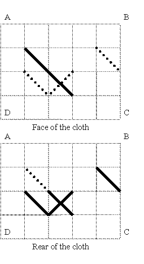

Home Page
F.A.Qs
Statistical Charts
Past Contests
Scheduled Contests
Award Contest
| Online Judge | Problem Set | Authors | Online Contests | User | ||||||
|---|---|---|---|---|---|---|---|---|---|---|
| Web Board Home Page F.A.Qs Statistical Charts | Current Contest Past Contests Scheduled Contests Award Contest | |||||||||
|
Language: Cross-stitch.
Description Archaeologists have found a cloth decorated with needlework. This needlework is a cross-stitch made with several threads. The following rules have been observed:
 This is an example of a pattern made with six stitches. The grid has size 4*5. The face of the cloth is drawn on the upper half of the figure. The stitches lying on the face are drawn with solid lines. The rear stitches uncovered with those of the face are drawn with dot-lines. On the lower half of the figure the cloth is oriented as on the upper half. All the rear stitches are drawn with solid lines there. The face stitches, which do not cover rear stitches, are drawn with dot-lines. It can be seen that there are the stitches at both sides of one of the cell diagonals. This cross-stitch cannot be made with less than four threads. Archaeologists want to know if the pattern was made with the least number of threads. You have to write a program, which will determine the minimal number of threads needed to make the given pattern. Input The first line of the input contains two integers N and M separated by a space. They are vertical (N) and horizontal (M) sizes of the grid, i.e. amounts of the cells in a vertical and horizontal rows respectively (1<=N,M<= 200). Each of the following 2*N lines contains M symbols. Each symbol describes one square of the grid. The first N lines correspond to the face of the cloth and the last N lines correspond to the rear of the cloth. The symbols used are ".", "/", "\" and "X" (a dot means an empty square). For more information see the sample. It corresponds to the cloth drawn at the figure. Output The output should contain one integer — the minimal number of threads needed to make the described pattern. Sample Input 4 5 ..... .\... ..\.. ..... ..... ....\ .\X.. ..... Sample Output 4 Source |
[Submit] [Go Back] [Status] [Discuss]
All Rights Reserved 2003-2013 Ying Fuchen,Xu Pengcheng,Xie Di
Any problem, Please Contact Administrator